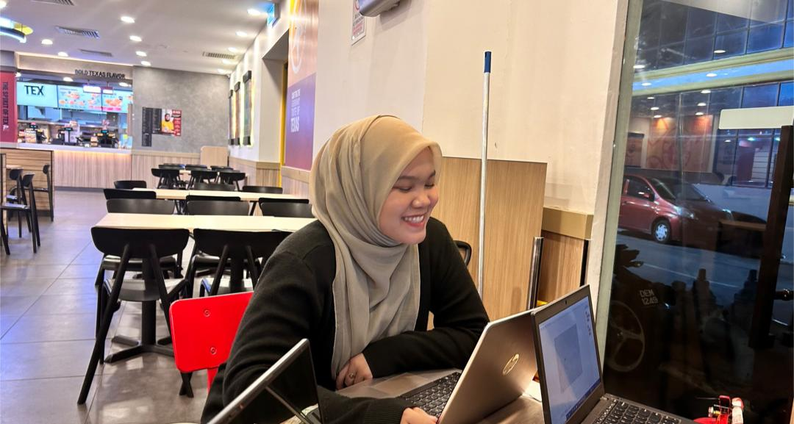
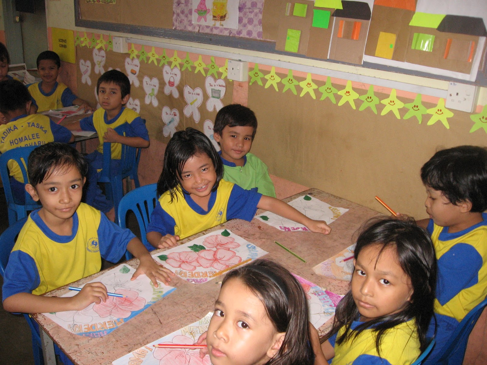
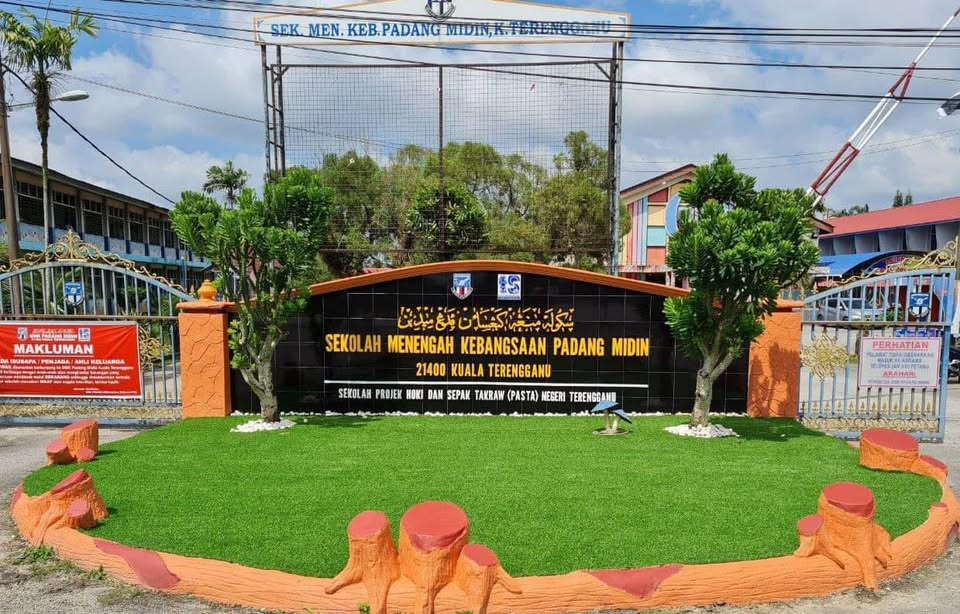
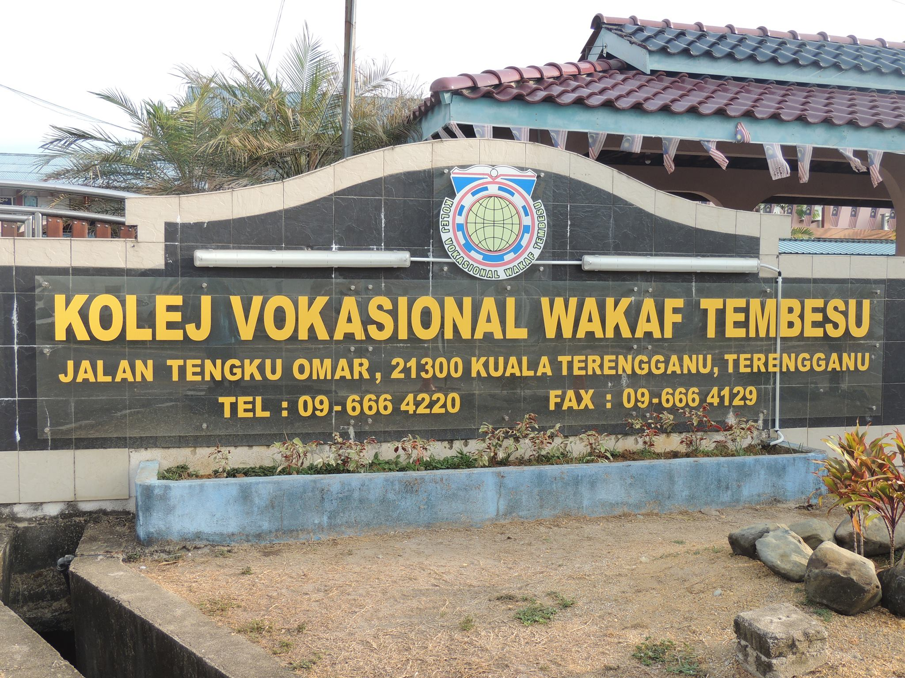
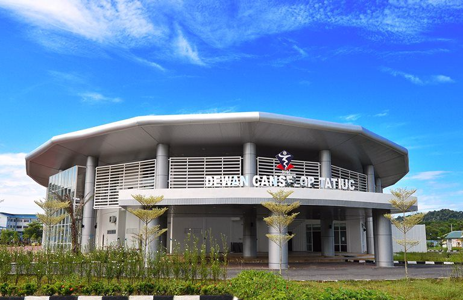

About Me Hello, I'm ZahirahYaya
Personal Details
Nur Zahirah binti Nor Azlan
I am currently a final-year student in my third year at UCTATI,
pursuing a Bachelor of Information Technology and Business Management.
- Age: 22
- Birthday: 16 September 2003
- Study: UCTATI
- Course: BIBM
- Address: Taman Al Amin
- Hometown: Bukit Payong, Terengganu
- Phone: +60 123456789
- Email: zahirahyayaa@gmail.com
As I approach the completion of my degree, I am more motivated than ever to apply my knowledge in real-world environments and contribute meaningfully to the industry.

My Education Journey
|
 |
Tadika Homalee, KelantanAttended Tadika Homalee, a kindergarten, from 2007 to 2009, where I developed early social skills, basic literacy and numeracy, and participated in creative activities and group learning. |
SK Padang Garong 1, KelantanAttended SK Padang Garong 1 from 2010 to 2015, completing primary education. Developed foundational academic skills in Bahasa Melayu, English, and Mathematics, and participated in extracurricular activities such as sports, arts, and school events. |
|
|
 |
SMK Padang Midin, TerengganuAttended SMK Padang Midin from 2016 to 2018, completing lower secondary education. Focused on core subjects including Science, Mathematics, and Languages, while participating in school activities and developing teamwork and leadership skills. |
|
 |
Kolej Vokasional Wakaf Tembesu, TerengganuAttended Kolej Vokasional Wakaf Tembesu from 2019 to 2020, specializing in Accounting. Gained foundational knowledge in bookkeeping, financial management, and accounting principles, while developing analytical and organizational skills through practical coursework and projects. |
Foundation in Information Technology, UC TATICompleted Foundation in Information Technology at UCTATI from 2021 to 2022. Developed core skills in computer systems, programming, networking, and software applications, laying the groundwork for further studies in IT and technology-related fields. |
|
|
 |
Bachelor in Information Technology, UC TATICurrently pursuing a Bachelor in Information Technology with Business Management (Honours) at UC TATI since 2022 and in the final year. Gaining in-depth knowledge and practical skills in coding, including coursework, projects, and professional development to prepare for a future career in the industry. |
My Values & Principles
- ✔ Discipline: I believe that consistency and discipline are the keys to improving skills and achieving personal goals.
- ✔ Creativity: I enjoy designing layouts, combining colors, and making digital content visually appealing.
- ✔ Growth: I constantly seek to learn new things, whether it's about coding, UI/UX, or personal development.